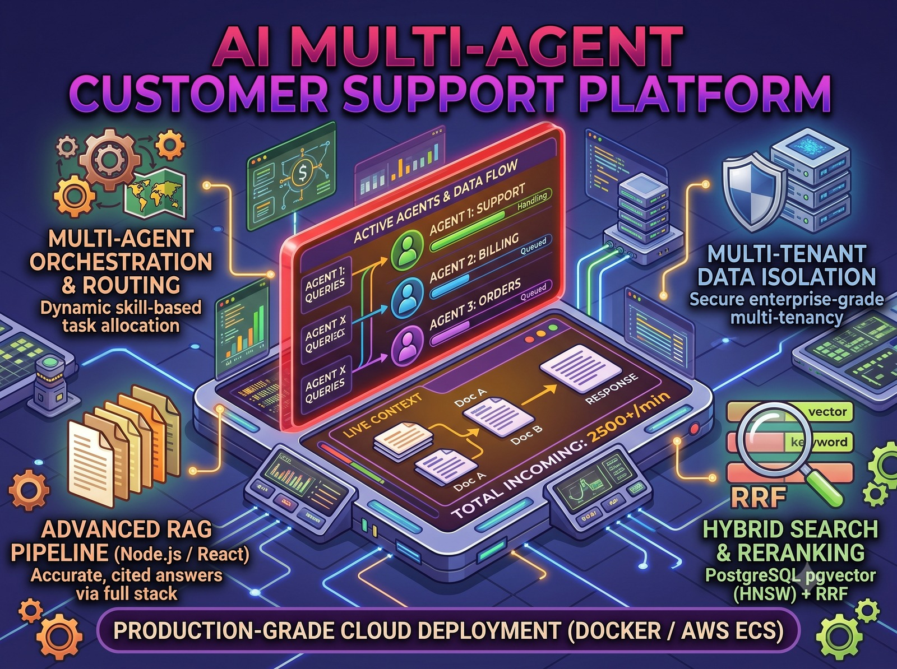

1. Executive Summary & Motivation
Standard vector search (semantic retrieval) fails frequently in customer support: it is unable to accurately retrieve specific order numbers, product SKUs, or exact error codes (e.g., "Error 504" or "Order #98124"). Conversely, traditional keyword search fails to understand conversational synonyms (e.g., confusing "refund" with "money back").
I engineered a production-grade Hybrid RAG pipeline in PostgreSQL that combines both worlds, eliminating hallucinations and ensuring that customer responses are strictly grounded in verified enterprise documentation with traceable source citations.
2. The 6-Stage Hybrid RAG Pipeline
Query Rewriting & Intent Distillation
Customers communicate conversationally (e.g., "Hey, I bought these headphones last week and they stopped working, can I return them?"). The system first executes an ultra-fast local LLM step to distill this into a search-optimized intent query: "return window defective headphones warranty policy".
Multi-Tenant Pre-Filtering
Before executing any vector distance calculations, the SQL query applies hard filters for tenantId and country. Pre-filtering ensures strict enterprise data isolation (Company A never retrieves Company B's confidential docs) while saving massive compute overhead compared to post-filtering.
Simultaneous Hybrid Retrieval (Vector + Keyword)
Executed within a single PostgreSQL query utilizing Common Table Expressions (CTEs):
- Dense Semantic Search: Uses
pgvectorwith an HNSW (Hierarchical Navigable Small World) index to measure cosine similarity across embeddings. - Sparse Lexical Search: Uses PostgreSQL's GIN index on a precomputed
search_vectorcolumn (generated via automated database triggers) to capture exact part numbers and SKU codes.
Reciprocal Rank Fusion (RRF)
Because cosine distance (0.0 to 1.0) and full-text TF-IDF scores (e.g., 14.2) reside on incompatible scales, raw addition produces biased results. I implemented the industry-standard RRF formula:
This ranks documents based purely on their position in both search lists, producing a balanced candidate set of the top 30 chunks.
Cross-Encoder Reranker (LLM-as-a-Judge)
The top 30 candidate chunks are passed to a cross-encoder stage. Unlike bi-encoders that encode documents in isolation, the cross-encoder evaluates the user's rewritten query alongside the chunk text simultaneously, scoring relevance from 0 to 100 and filtering down to the Top 2 most authoritative chunks.
Grounded Generation with Traceable Citations
The final prompt injects the curated chunks with strict system instructions prohibiting ungrounded answers. Responses stream to the user via Server-Sent Events (SSE), complete with clickable citation chips linking to verified knowledge base article IDs.
3. Multi-Agent Routing Architecture
Beyond knowledge retrieval, the platform employs specialized sub-agents:
- Intent Router Agent: Classifies whether the customer requires Order Tracking, Billing & Invoices, or General Technical Support.
- Order Agent: Equipped with Zod-validated database tool calls to look up order shipment statuses, tracking numbers, and delivery ETAs directly from PostgreSQL.
- Billing Agent: Handles refund requests, invoice lookups, and payment gateway status verification through Stripe API webhooks.
4. Key Engineering Decisions
While IVFFlat requires periodic retraining and degrades query recall under high update volume, HNSW (Hierarchical Navigable Small World) constructs a multi-layer graph index. It enables $O(\log N)$ query traversal with high recall (>98%) and supports immediate real-time vector inserts without maintenance downtime.
Looking to Implement Production RAG?
Whether you need hybrid vector search, custom embedding factories, or multi-agent tool orchestration in Node.js & TypeScript—let's discuss your roadmap.
Connect with Chetan Ladumor